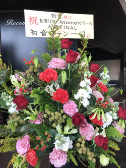
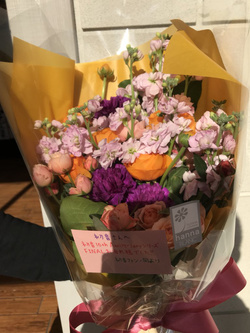
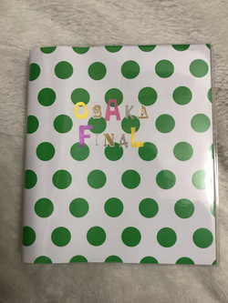
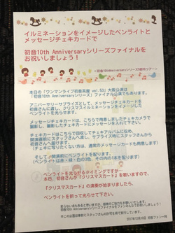
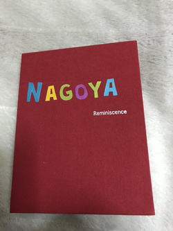
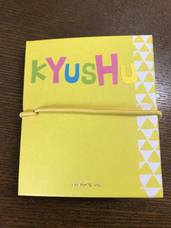
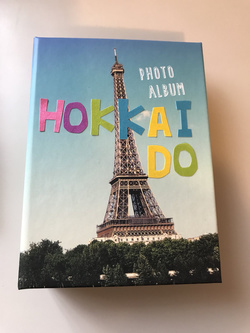
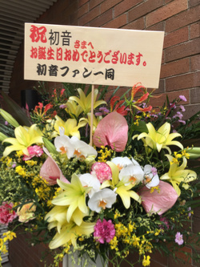
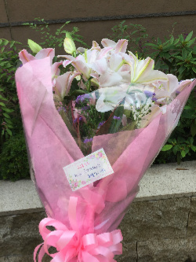
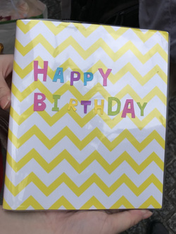

Hatsune
10th
Anniversary
初音ファン一同による
初音さんデビュー10周年記念企画・第2弾
10周年アニバーサリーシリーズ全公演でのサプライズが無事終了しました。
協力いただいた皆様ありがとうございました！！
10月8日（日）の「ワンマンライブ初音茶屋vol.51」を皮切りに、初音さんの10thAnniversaryツアーが開催されます。
このツアーは、9月5日にデビュー10周年を迎えた初音さんにとって記念となるツアーであると同時に、東京初音茶屋は初音さんの誕生日の直近ということもあり、バースデーライブの意味合いもあります。
それに合わせて、ファン一同から誕生日＆デビュー10周年記念のお祝いをしませんか？
10月8日（日）【東京】ワンマンライブ初音茶屋vol.51
10月22日（日）【札幌】初音のヒトリラツアー’17～札幌編～
11月5日（日）【福岡】初音のヒトリラツアー’17～福岡編～
11月26日（日）【名古屋】ワンマンライブ初音茶屋vol.52
12月10日（日）【大阪FINAL】ワンマンライブ初音茶屋vol.53
上記公演でサプライズ企画への参加とカンパのご協力を募集しています。
この企画に賛同し、ご協力いただける方は、ぜひ下記リンクから申し込みページヘ進み、参加登録をお願いします。
※前回9月10日の「初音 10thAnniversaryLive2017 ～16歳の頃の夢、覚えていますか？～」のサプライズの様子は
こちら
※参加登録にはTwitterのアカウントが必要になります。
Twitterアカウントをお持ちでない方は、
yumetabi.club@gmail.comまで、メールにてご連絡ください。
※この企画は事前にスタッフさんの許可を得て実行しています。
サプライズ企画の結果報告 Up
10月8日（日）東京公演、10月22日（日）札幌公演、11月5日（日）福岡公演、11月26日（日）名古屋公演、12月10日（日）大阪公演でのサプライズは無事に成功しました。 当日の写真と合わせて、簡単に結果を報告させていただきます！
大坂公演

初音さんにプレゼントしたフラワースタンド。
開演前に会場の入口に飾ってもらいました。

初音さんにプレゼントしたお祝いの花束。
サプライズのタイミングで、
ステージ上の初音さんに手渡ししました。

初音さんにプレゼントしたチェキアルバム。
ファン一人一人の顔をチェキで撮影し、
お祝いのメッセージを書き込んでアルバムに収めました。

当日会場で配布したフライヤー。
サプライズのタイミングでペンライトを光らせ、
イルミネーションの演出でお祝いしました。
名古屋公演

初音さんにプレゼントしたチェキアルバム。
ファン一人一人の顔をチェキで撮影し、
お祝いのメッセージを書き込んでアルバムに収めました。
福岡公演

初音さんにプレゼントしたチェキアルバム。
ファン一人一人の顔をチェキで撮影し、
お祝いのメッセージを書き込んでアルバムに収めました。
札幌公演

初音さんにプレゼントしたチェキアルバム。
ファン一人一人の顔をチェキで撮影し、
お祝いのメッセージを書き込んでアルバムに収めました。
東京公演

初音さんにプレゼントしたフラワースタンド。
開演前に会場の入口に飾ってもらいました。

初音さんにプレゼントしたお祝いの花束。
サプライズのタイミングで、
ステージ上の初音さんに手渡ししました。

初音さんにプレゼントしたチェキアルバム。
ファン一人一人の顔をチェキで撮影し、
お祝いのメッセージを書き込んでアルバムに収めました。
サプライズ＆プレゼントの詳細
10周年記念ツアーでのサプライズとプレゼントは、以下の内容を予定しています。
-
10月8日（日）【東京】ワンマンライブ初音茶屋vol.51
ライブに参加する方のチェキを撮影してそのチェキにメッセージを書いていただき、サプライズの時にスタッフさんを通し渡してもらおうと思っています。
そしてサプライズのタイミングでデビュー10周年の意味を込めて10色のペンライトを光らせて初音さんの誕生日をお祝いしましょう。その時に一緒に花束を渡す予定です。
また、フラワースタンドを贈り、会場の入口に飾ってもらうつもりです。
- 10月22日（日）【札幌】初音のヒトリラツアー’17～札幌編～
- 11月5日（日）【福岡】初音のヒトリラツアー’17～福岡編～
-
11月26日（日）【名古屋】ワンマンライブ初音茶屋vol.52
札幌・福岡・名古屋公演では、メッセージチェキのみのプレゼントを予定しています。
-
12月10日（日）【大阪FINAL】ワンマンライブ初音茶屋vol.53
大阪公演では、メッセージチェキと花束、フラワースタンドのプレゼントに加えて、「クリスマスカード」が上演されるタイミングで、会場のみんなでペンライトを使って光のイルミネーションを作る予定です。
大阪FINAL終了後、この企画に参加してくださった方のお名前を入れたカードを作成して後日、初音さんにお渡しする予定です。
初音さんについて

2007年9月5日「恋、花火」でデビューし、ドラマの主題歌なども多数手がける。
今年はデビュー10周年イヤーへと突入し、10月以降は初のワンマンライブ「初音茶屋」東名阪での開催や、札幌・福岡へのツアーも決定している。
初音茶屋について
初音さんが2010年から開催していて、通算50回目を越える恒例のワンマンライブ。
おなじみの楽曲はもちろん、みんなが知ってるカバー曲や、子供の頃から作り続けている曲を披露するコーナーなど、初めて来た人でも楽しめる仕掛けが満載。初音さんがチーム・初音のメンバーと繰り広げる、独特の『ゆるゆるトーク』にも癒やされること請け合いです。
初音さん10周年に関するツイート
初音さん10周年に関する最新の話題をチェックしましょう。
#初音10th のツイート初音さんのFacebookページ
公式Facebookページでも最新の情報をチェックできます。
初音さんにお祝いのメッセージを送ろう
10周年ツアーライブには参加できないけど、初音さんの誕生日＆デビュー10周年をお祝いしたい！
そんな方は、ぜひお祝いのメッセージをツイートしませんか？
もちろん、当日のライブに参加する方からのメッセージも大歓迎です♪
おすすめのTwitterアカウント
@hatsune1011
初音さんの公式アカウント。
ブログの更新と合わせてチェック！
@hatsune_web
初音 WEBSTAFFさんの公式アカウント。ライブ情報をはじめインフォメーション関連はこちら。
@pj_live
リブラス＆初音さん応援ちう♪初音さんとリブライト・ラスタンドの情報をツイートしている非公式アカウント。
@hatsune_movie
初音 動画bot。初音さんのYoutube動画をツイートしている非公式アカウント。
@hatsune_song
初音 歌詞bot。
初音さんの楽曲の歌詞をツイートしている非公式アカウント。